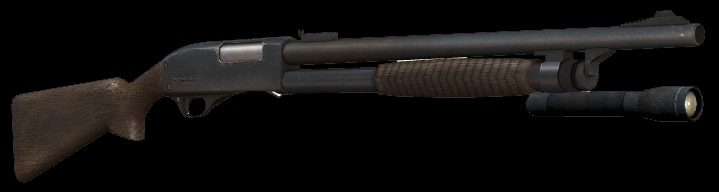
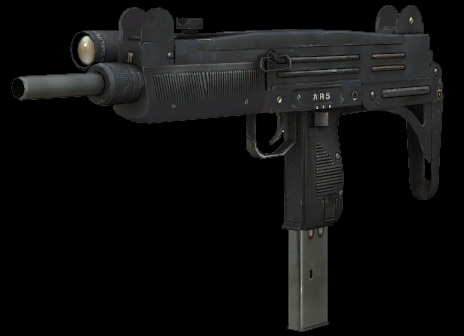
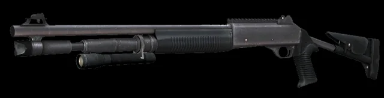
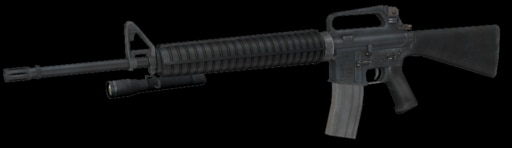
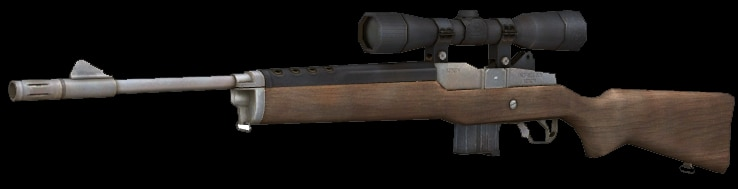
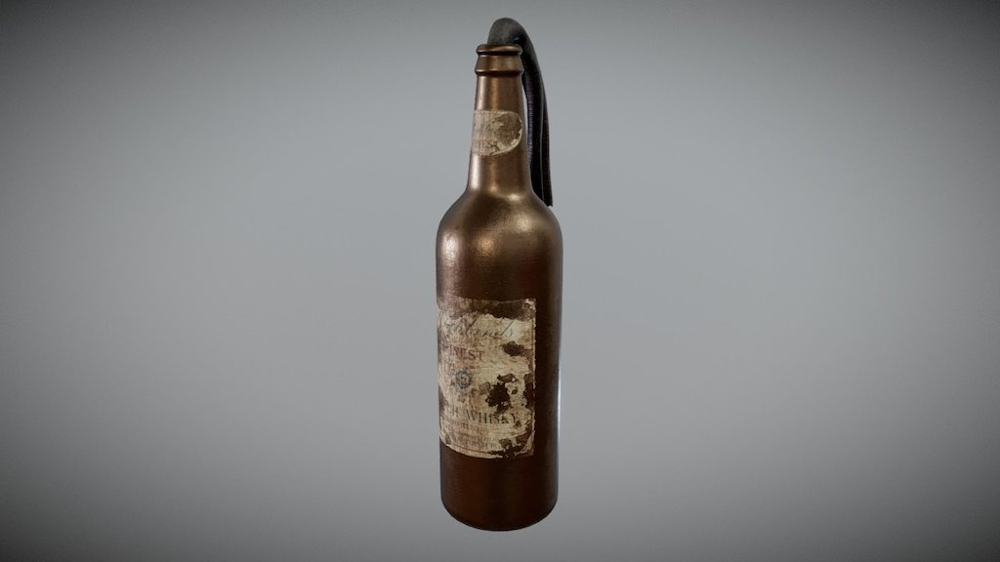
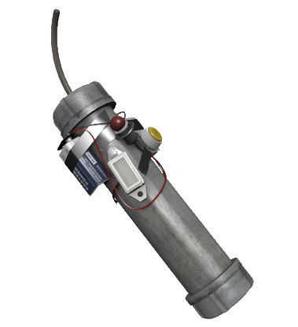
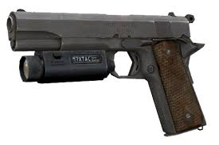
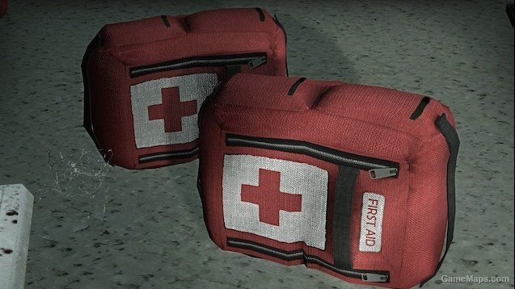
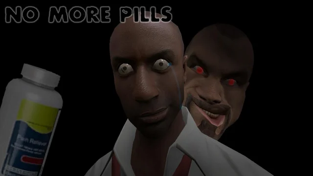

Armas Primarias
Escopeta de bombeo(Pump Shotgun)

Capacidad: 8 cartuchos
Daño: Medio-alto(excelente contra infectados comunes)
Cadencia de disparo: lenta
Precision: Muy baja a larga distancia
Ideal Para: Corto Alcance
Subfusil Uzi

Capacidad: 50 balas
Daño: Bajo por bala, pero alta cadencia de fuego
Precisión: Devente a media distancia
Ideal Para: Control de hordas y fuego sostenido
Escopeta automática(Auto Shotgun)

Capacidad: 10 cartuchos
Daño: Alto
Cadencia de disparo: Alta
Ideal para: Corto alcancey enfrentar Especiales
Rifle de asalto M16

Capacidad: 50 balas
Daño: Medio
Cadencia de disparo: Alta
Ideal para: Combate a media-larga distancia, muy versátil
Rifle de francotirador(Hunting Rifle)

Capacidad: 15 balas
Daño: Alto por disparo
Precisión: Muy alta
Ideal para: Enemigos a larga distancia o enemigos especiales
Armas Secundarias/Arrojadizas
Molotov

Efecto: Fuego en área
Ideal para: Zonas de control, Tanks, Witchs, hordas
Riesgo: Puede herir a aliados si se usa mal
Bomba casera(Pipe Bomb)

Efecto: Emite un pitido que atrae a los infectados comunes y luego explota
Ideal para: Limpiar hordas completas
Pistola estándar

Capacidad: 15 balas
Munición: Ilimitada
Daño: Bajo
Precisión: Alta
Ventaja: Puedes llevar una o dos(dual-wield)
Ideal para: Combate a distancia media y ahorro de munición
Objetos de apoyo
Kit de primeros auxilios

Cura 80 HP
Usable en uno mismo o en un compañero
Píldoras analgésicas

Aumentan salud temporalmente
No curan, solo "simulan" salud extra